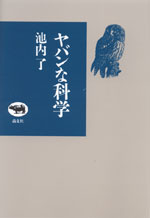
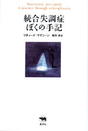

|
|
映画 | ||||||
| 映画監督スタンリー・キューブリック | |||||||
| ヴィンセント・ロブロット 浜野保樹・櫻井英里子訳 | |||||||
| A5判 472頁 | |||||||
| 定価3990円(本体3800円） | |||||||
| 4-7949-6631-8 C0074 | |||||||
| スタンリー・キュブリックの伝記の決定版。身体が弱かった子ども時代。10代でカメラマンに。三度の結婚。最初の映画はどのように生まれたか。撮影技術やセットの裏話。俳優との関係。インタビュー嫌いでも知られるキューブリックの生涯を、彼に関わったあらゆる人にインタビューし資料を集め、構成した大著。知られざるキューブリックの生涯。 | |||||||
|
|
広告・デザイン | ||||||
| 風とロック 箭内道彦と21世紀広告 |
|||||||
| アジール・デザイン編 | |||||||
| A5判 208頁 | |||||||
| 定価1890円（本体1800円） | |||||||
| 4-7949-6617-2 C0063 | |||||||
| 糸井重里、川崎徹、大貫卓也、佐藤雅彦らに続く新世代の異才CMディレクターとして注目を集めている箭内道彦は、世間をあっと言わせる広告展開で知られる。その箭内道彦がこれまで手がけた仕事を紹介しつつ、浅野忠信、黒崎輝男（イデー）ら各界の異才たちとの対談、コラムなど収録。広告・メディア・デザイン・アートの未来を占う一冊。 | |||||||
| 宗教 ・ エッセイ | |
| 人を信じるということ | |
| 島田裕巳 | |
| 四六判 232頁 | |
| 定価1890円（本体1800円） | |
| 4-7949-6633-4 C0095 | |
| なぜ日本人は「人を信じる」ことができなくなってしまったのか--オウム真理教研究の第一人者であり、「信じる」ことにこだわり続けてきた宗教学者、島田裕巳氏がこの問いに挑戦する。日本文化なかでの「信じる」ことはどのように息づき、また変わってしまったのか。その危機的な状況を私たちは、どうとらえ直し、乗り越えていったらいいのか。今日の日本で、「信じるということ」を考えていく。 |
 |
科学・エッセイ | ||||||
| ヤバンな科学 | |||||||
| 池内了 | |||||||
| 四六判 320頁 | |||||||
| 定価2310円（本体2200円） | |||||||
| 4-7949-6630-X C0040 | |||||||
| 科学者という名の野蛮人が地球を支配しようとしている！ 遺伝子操作。スペースシャトルの事故。BSE（狂牛病）問題。SARSなどの新しいウイルスの流行。などなど。最近の科学・技術問題の背景をわかりやすく解きあかし、あまりにも巨大化した科学にかわる、身近な自然現象や環境や食生活を考える、もうひとつの新しい科学を提唱する。 | |||||||
 |
精神医学・メディカルエッセイ | ||||||
| 統合失調症 ぼくの手記 | |||||||
| リチャード・マクリーン 椎野淳訳 | |||||||
| 四六判 248頁 | |||||||
| 定価1890円（本体1800円） | |||||||
| 4-7949-6632-6 C0047 | |||||||
| 大学生活を謳歌していたリチャードは次第に幻聴や妄想に翻弄され、言動に変調をきたすようになる。最初の兆候。家族や友人の反応。専門医との出会いと投薬。回復への道のり……。百人に一人が発症するといわれる統合失調症。患者の孤独な闘いに光をあて、誰にでもふりかかる精神の病いへの理解を願って綴られた貴重な体験記。著者自身の絵（50点）も収録。この病の患者の内面を知る手がかりを与えてくれる。 | |||||||
| 日本文学・漫画 | |||||||
| まんが たけくらべ | |||||||
| すずき大和 | |||||||
| 四六判 160頁 | |||||||
| 定価1575円（本体1500円） | |||||||
| 4-7949-2021-0 C0079 | |||||||
| 樋口一葉の名作『たけくらべ』を完全漫画化！ 吉原遊廓周辺を舞台に、やがて遊女となるべき美少女美登利と少年僧信如との淡い恋を中心に、思春期の少年少女たちの揺れ動く姿を描く。文語文のゆえに、なじみにくくなった明治文学屈指の名作を、親しみやすい漫画作品としてお楽しみください。この秋、一葉は五千円札の肖像になります。 | |||||||